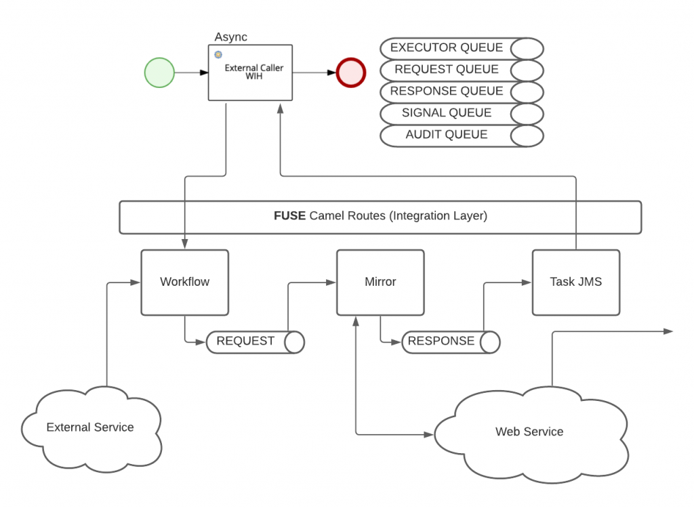

RHPAM connectivity to external AMQ configurations in OpenShift
This post describes how to connect Red Hat Process Automation Manager to an external Red Hat AMQ application on a shared Openshift Container Platform 3 cluster. RHPAM uses an internal AMQ by default. However, if the OCP cluster housing the RHPAM applications also hosts a AMQ you may consider connecting them directly. This will avoid having a dedicated internal AMQ for each RHPAM application.
In our platform implementation, RHPAM is supplemented by a FUSE integration layer and external AMQ broker layer. The FUSE and AMQ broker layers handled messages across the platform composed of several RHPAM applications. To achieve a successful exchange, we leveraged the configuration parameters outlined within the RHPAM immutable server environment on OCP documentation. This documentation covers the requirements for configuring communication with an AMQ server for an immutable Process Server using S2I. However, a few additions needed to be performed to ensure the following structure was functioning correctly

OCP Deployment Configuration
Focusing on the section required for our implementation, using the rhpam-prod-immutable-kieserver-amq.yaml Openshift template file is the approach we chose for achieving our goal.
Environment Variables
We start by leveraging RHPAM documentation covering configuring communication with an AMQ server for an immutable Process Server using S2I. Setting the following parameters as required for your environment:
- AMQ Username (
AMQ_USERNAME) and AMQ Password (AMQ_PASSWORD): The user name and password of a standard broker user, if user authentication in the broker is required in your environment. - AMQ Role (
AMQ_ROLE): The user role for the standard broker user. The default role is admin. - AMQ Queues (
AMQ_QUEUES): AMQ queue names, separated by commas. These queues should be already created and are accessible as JNDI resources by the time the RHPAM app starts. If you use custom queue names, you must also set the same queue names in theKIE_SERVER_JMS_QUEUE_RESPONSE,KIE_SERVER_JMS_QUEUE_REQUEST,KIE_SERVER_JMS_QUEUE_SIGNAL,KIE_SERVER_JMS_QUEUE_AUDIT, andKIE_SERVER_JMS_QUEUE_EXECUTORparameters. - AMQ Protocols (
AMQ_PROTOCOL): Broker protocols that the Process Server should use to communicate with the AMQ server, separated by commas. Allowed values are openwire, amqp, and mqtt. Only openwire, the default value, is supported by JBoss EAP. - AMQ Remote (
EJB_RESOURCE_ADAPTER_NAME): This creates the followingpooled-connection-factoryin themessaging-activemqsubsystem.
The deployment configuration should resemble the following:
- name: MQ_SERVICE_PREFIX_MAPPING
value: ${APPLICATION_NAME_U}_amq7=AMQ
- name: AMQ_USERNAME
value: ${AMQ_USERNAME}
- name: AMQ_PASSWORD
value: ${AMQ_PASSWORD}
- name: AMQ_PROTOCOL
value: ${AMQ_PROTOCOL}
- name: ${APPLICATION_NAME_UC}_AMQ_TCP_SERVICE_HOST
value: broker-amq.nts-${ENV_CHOICE}-hz0v-amq.svc.cluster.local
- name: ${APPLICATION_NAME_UC}_AMQ_TCP_SERVICE_PORT
value: '${PORT}'
- name: KIE_SERVER_JMS_QUEUE_EXECUTOR
value: ${APPLICATION_NAME_C}_EXECUTOR
- name: KIE_SERVER_JMS_QUEUE_RESPONSE
value: ${APPLICATION_NAME_C}_RESPONSE
- name: KIE_SERVER_JMS_QUEUE_REQUEST
value: ${APPLICATION_NAME_C}_REQUEST
- name: KIE_SERVER_JMS_QUEUE_SIGNAL
value: ${APPLICATION_NAME_C}_SIGNAL
- name: KIE_SERVER_JMS_QUEUE_AUDIT
value: ${APPLICATION_NAME_C}_AUDIT
- name: AMQ_QUEUES
value: ${APPLICATION_NAME_C}_EXECUTOR, ${APPLICATION_NAME_C}_RESPONSE, ${APPLICATION_NAME_C}_REQUEST, ${APPLICATION_NAME_C}_SIGNAL, ${APPLICATION_NAME_C}_AUDIT
- name: EJB_RESOURCE_ADAPTER_NAME
value: activemq-ra-remoteIt is worth highlight an example because the naming conventions are very particular underneath the hood. For example, if your application name is red-hat-pam then the variable ${APPLICATION_NAME_U} would be red_hat_pam and the variable ${APPLICATION_NAME_UC} would be RED_HAT_PAM. The last environment variable in the above list is necessary in order to append the standalone-openshift.xml file used by the RHPAM app. It adds the following code block, which allows the remote connection with AMQ.
<pooled-connection-factory name="activemq-ra-remote" entries="java:/JmsXA java:/RemoteJmsXA java:jboss/RemoteJmsXA java:/ewih_e2e_uber_amq7/ConnectionFactory" connectors="netty-remote-throughput" transaction="xa" user="admin" password="admin"/>Lastly, the following two configs were appended to the list of JAVA_OPTS_APPEND. These relate to the deployment mounts regarding the AMQ brokers access covered in the following section.
-Dorg.apache.activemq.ssl.trustStore="/etc/broker-secret-volume/client.ts"
-Dorg.apache.activemq.ssl.trustStorePassword="mykeystorepass"Volume Mounts
Two volumes mounts are required for each RHPAM deployment. First, a modification to the postconfigure.sh script that allows us to enable ssl for AMQ brokers. This is achieved with jboss-cli.yaml introducing the enablessl.cli script shown below:
apiVersion: v1
data:
enablessl.cli: >
embed-server --std-out=echo --server-config=standalone-openshift.xml
batch
/subsystem=messaging-activemq/server=default/remote-connector=netty-remote-throughput:remove
/subsystem=messaging-activemq/server=default/remote-connector=netty-remote-throughput:add(params={ssl-enabled
=> "true"}, socket-binding="messaging-remote-throughput")
run-batch
quit
postconfigure.sh: |
echo "****** RUNNING ADDITIONAL CONFIGURATIONS WITH JBOSS-CLI **********"
echo "START - enable-ssl for AMQ brokers"
/opt/eap/bin/jboss-cli.sh --file=/opt/eap/extensions/enablessl.cli
echo "END - enable-ssl for AMQ brokers"
kind: ConfigMap
metadata:
name: jboss-cliThe second mount required is the client truststore, which allows access to the AMQ brokers.
apiVersion: v1
data:
client.ts: >-
${SECRET}
kind: Secret
metadata:
labels:
app: broker-sec
name: client-truststore
type: OpaquePerformance Improvements
Our implementation required the ability to handle a lot of traffic. This meant that we needed to increase the maxSession and MDB pool size in JBoss EAP and number of connections to selected queues. For our case the bottleneck was occurring on the Executor queue. To achieve this we appended the following code to the ejb-jar.xml file on the RHPAM deployment:
<activation-config-property>
<activation-config-property-name>maxSession</activation-config-property-name>
<activation-config-property-value>100</activation-config-property-value>
</activation-config-property>
Please note that while the property name is maxSession this property will update the number of connections in that queue instead of sessions.
Conclusion
While this use case is narrow, connection to an external AMQ is an option to be considered while tackling similar challenges when using RHPAM. Some of the benefits from connecting to the external AMQ include lowering the memory footprint of RHPAM application pods, reliably resolved thread lock issues with certain volume sizes, and centralizing all AMQ processing to a dedicated broker deployment. Some of the drawbacks new failure points for RHPAM on the AMQ queues as they have to be created previous to deployment, heavier reliance on CPU cores, HPA configuration must be configured based on CPU utilization.
Author
Anthropology Savvy Engineer Computer science engineer with experience in design and development of real-time applications. Experienced in object-oriented programming, developing, testing and debugging code. Quick to learn and master new technologies. Core competencies and experience include JavaEE, Python, RH PAM, Agile Scrum & SAFe methodology and Git.
View all posts